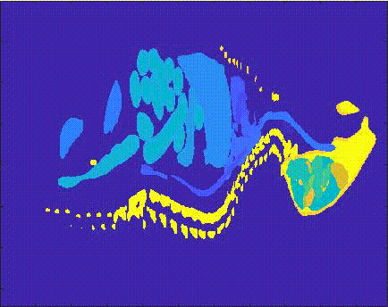

|
Hi, I'm James, a recent CS MS graduate from the University of Illinois Urbana-Champaign in the Vision Lab, advised by Professor David A. Forsyth. Resume | Email | Google Scholar | Github |
{kind=link}
|
Masters in Computer Science, 4.0 GPA
May 2024
• TA for CS444 Deep Learning for Computer Vision, SP24 Bachelors in Computer Engineering, Physics Minor, Highest Honors May 2022
• A.R. "Buck" Knight Award |
|
|
Anand Bhattad, James Soole, David A. Forsyth CVPR 2024 We propose a novel method, StyLitGAN, for relighting and resurfacing generated StyleGAN images in the absence of labeled data. By imposing known physical facts about images, we can generate images with realistic lighting effects without the need for paired or CGI data. |
 |
James Soole MS Thesis, UIUC 2024 Fine-tuning dense prediction models to reduce inconsistencies under diverse lighting, creating generative scene relightings, and exploring internal stylecode representations of a scene. |
|


|
James Soole Senior Thesis, UIUC 2022 Dynamic PACT imaging simulation framework for small animals, simulating photon transport and acoustic wave propagation to produce acoustic pressure measurements, for use with different imaging systems and numerical phantoms. |
|
2024 2023 2022 2019 |
MathWorks Intern - Machine Learning Infrastructure MathWorks Intern - File System MathWorks Intern - System Architecture Core Dug the Dog Project Hidden |